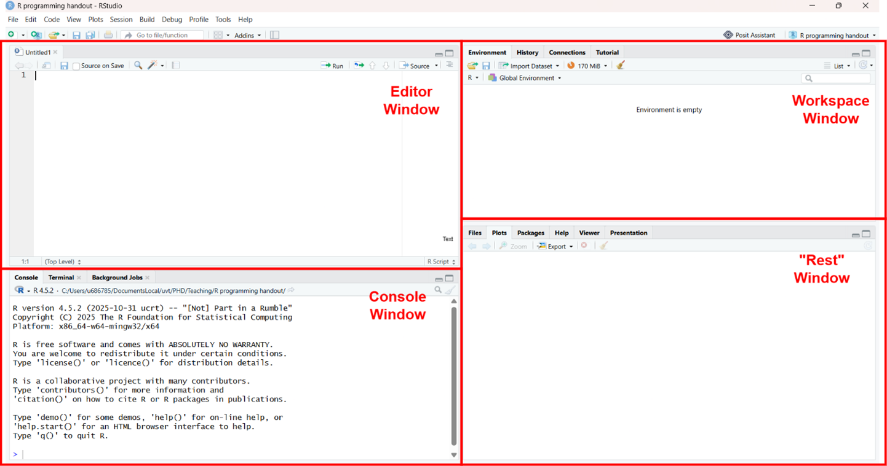
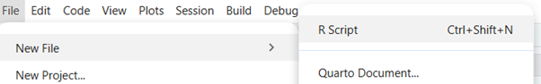
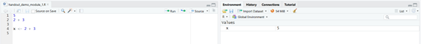
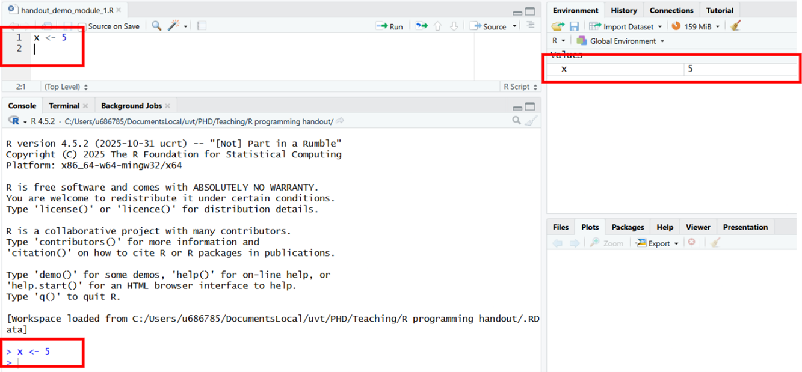
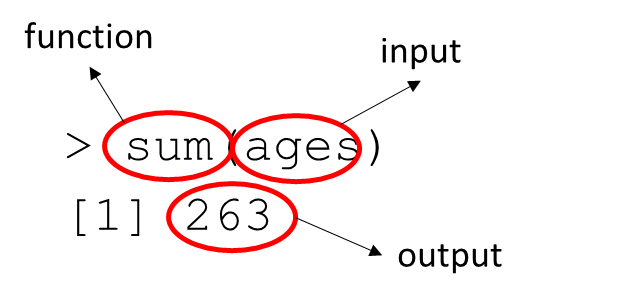
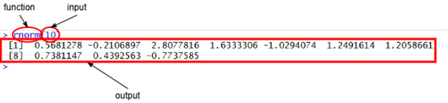
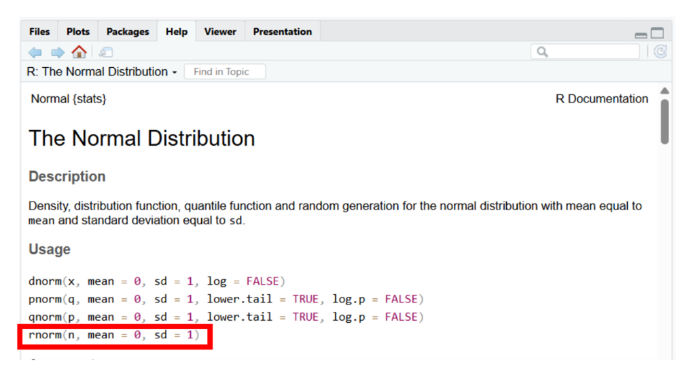

Chapter 3 The Basics
3.1 Navigating RStudio
RStudio is laid out into 4 different panes. The default panes are as shown below:

3.1.1 Console Window
This window is where your code will be run by R, and also where the result of the code will be printed.
You can try it out by typing
5into the R console after the “>” prompt, and then hitting enter. Then type2 + 3. What do you see?
In both cases R returns the 5 as a response from the input.

3.1.2 Editor Window
This window is where you can create R scripts wherein you can write down your code to store so you can rerun it multiple times and store it for later reuse.
To open an R script, navigate to the following:

- In your newly opened R script, type in
5on line 1, then click enter to create a new line and type2 + 3. To run these lines of codes, select them or hold your cursor on that line and either press CTRL+ENTER, or click on the Run button. What do you see?

The commands are run through the console, and the output is presented the same way as before.
- To store this file either press CTRL+S, or navigate to File > Save, and give the script a name. You can reopen this file and your previously written code will be available for you to rerun.
3.1.3 Workspace Window
This window contains your Environment which shows all the Objects (more on these later) you currently have stored in your R workspace. This window shows you what information you currently have stored.
In your Editor Window type
x <- 2 + 3and run it. What do you see in your Workspace window?
You can see that the Object x is now stored in your workspace and has the value of 5 assigned to it.

- Now type x into your Editor Windowand run it, what output do you see in the console window?
The console returns 5, the value of x.
3.2 Data as Objects
In R, we spend most of our time working with objects. Objects can be almost anything, from numbers like the 5 you worked with earlier, to whole datasets, graphic figures, and even code itself can be stored and passed around as an object. To create your own object you make use of <- as you did previously:

As a quick note: we advise you to code along with these examples so you understand how to implement them in RStudio.
One major type of object you will frequently encounter (and in fact you just created one) is Data. Data is a broad category comprising anything from a single number to a multi-dimensional array, but for now let’s focus on vectors.
3.2.1 Vectors
A vector is one or more of the same type of things, one after the other
The function c() can create vectors:
## [1] 1 2 3## [1] "Hagrid" "Harry"Notice I make vectors of numbers or sentences but not both at the same time - hence “the same type of thing”. Below are examples of different “single” objects that can occur together in a vector.
df <- data.frame(Example = c("42", "2.1543", "\"Felix\"; \"Tilburg\"", "TRUE; FALSE"),
Type = c("Integer (numeric)", "Double (numeric)", "Character", "Logical"),
Explanation = c("A number contains no decimals", "A number that **may** contain decimals", "A string of textual characters", "Special characters indicating either TRUE or FALSE"))
knitr::kable(df, caption = "Fundamental R Data Types", booktabs = TRUE)| Example | Type | Explanation |
|---|---|---|
| 42 | Integer (numeric) | A number contains no decimals |
| 2.1543 | Double (numeric) | A number that may contain decimals |
| “Felix”; “Tilburg” | Character | A string of textual characters |
| TRUE; FALSE | Logical | Special characters indicating either TRUE or FALSE |
Note that you cannot create a vector from different types of objects. Thus in the following case:
## [1] "Hagrid" "1"R automatically turns the 1 numeric type variable into a "1" character type variable to turn the vector into a character vector.
You may hear some people call R a “vectorized language”. What they are referring to is that when you perform an operation on a vector in R it will often perform that operation on each element of the vector.
For example, suppose there are 14 students in a class, of the following ages:
## [1] 22 22 21 25 23 19 23 25 19 21 20 23Then I can get their squared ages by:
## [1] 484 484 441 625 529 361 529 625 361 441 400 529Or the sum of the ages as:
## [1] 263Typing out a vector each time you want to do something with it is way too much work and looks messy. Just like any other object in R, you can store a vector of values for later use by assigning it to a variable. This works the same way as assigning a single value:
## [1] 22 22 21 25 23 19 23 25 19 21 20 233.2.2 Variables
A variable is a placeholder name that refers to some object, such as a vector. They function like the numbers they have on clothing racks in some places:
The coat is the value and the number on the hanger is the name of the variable
So,
c(22, 22, 21, 25, 23, 19, 23, 25, 19, 21, 20, 23)is the coat, andagesis the “hanger”.
Putting the coat on a hanger is called “assigning” a value to a variable. As mentioned before assigning value into variables is done with <-.
A variable can be named anything as long as it does not start with a number, does not contain operators, contains at least one regular letter character, and is preferably not already in use by R.
df <- data.frame(Acceptable = c("my_var_3", "x_ (fine albeit ugly)", "hamburgers_with_cheese (you can go as crazy as you want with your names)", "x"),
"Not Acceptable" = c("3_my_var (starts with a number)", "x^ (contains an operator character)", "__ (no letter character)", "pi (already in use by R; meaning that if you use it, it will overwrite the pi constant in R, and to use the pi constant again you would need to reset your R workspace)"))
knitr::kable(df, caption = 'Object Naming Rules', booktabs = TRUE)| Acceptable | Not.Acceptable |
|---|---|
| my_var_3 | 3_my_var (starts with a number) |
| x_ (fine albeit ugly) | x^ (contains an operator character) |
| hamburgers_with_cheese (you can go as crazy as you want with your names) | __ (no letter character) |
| x | pi (already in use by R; meaning that if you use it, it will overwrite the pi constant in R, and to use the pi constant again you would need to reset your R workspace) |
## [1] 3.141593## [1] 5To reset a workspace -for example in case of the assign to pi issue described above – you can make use of the following line of code:
With ls() you can see your objects
With rm() you can remove them
Once you have assigned a value to your variable, you can now reuse that variable to perform all sorts of calculations.
## [1] 484 484 441 625 529 361 529 625 361 441 400 529## [1] 263## [1] 198 198 199 195 197 201 197 195 201 199 200 197## [1] 198 198 199 195 197 201 197 195 201 199 200 197Note: variable names are case sensitive!
ages is not the same as Ages or AGES or ageS!
If you misspell the variable name, R will respond with an error explaining what went wrong:
## Error:
## ! object 'Ages' not found## Error:
## ! object 'AGES' not found## Error:
## ! object 'ageS' not found## [1] 22 22 21 25 23 19 23 25 19 21 20 23START EXCERSISE 1.2
3.3 Functions
Besides Variables, another common object in R are Functions. Functions in R take the following form:
f()
You have already used several functions c(1, 2, 3); sum(ages); rm(); ls().
Another example of a function you have used already are operators such as + and ^. You have used these operators as 3 + 2. This is shorthand for '+'(3, 2).
Almost always in R, functions also take some form of input, and have the following property:
An example of this principle is the following:
## [1] 263
sum is a function that takes a vector (input) and returns the sum of that vector (output).
Another example is the following:
## [1] 1.2539431 -0.4335064 -0.3916710 0.8510520 0.6538364 0.2230424 -0.4467583 0.6624969 -2.6242821
## [10] -0.9931889
rnorm is a function that takes an integer (input) and returns that number of random observations from a standard normal distribution (output).
The input of a function is called its arguments. Looking at our previous examples:
agesis the argument insum(ages)10is the argument inrnorm(10)
Functions can have multiple arguments:
## [1] 4.6514542 6.6404649 2.9014556 1.4724369 7.7486683 0.7437290 3.0049684 0.8243892 3.5657309 1.8207459Arguments can be specified either by name, or position:
rnorm(10, mean = 4, sd = 2)does the same asrnorm(10, 4, 2).
While specifying by position is faster to write and can sometimes remain easy to read (note how we did not name the first argument in the rnorm() function above, for example), for clarity it is often smart to specify all arguments but the first by name.
You can figure out which arguments you can specify and under which names by consulting the help files by adding ? in front of the function name:

This opens the help files, which shows a description of the function, a description of its arguments, as well as default values for those arguments. Default values represent the values that the function will use for arguments when they are not specified.

We can see that for rnorm, the mean and standard deviation of the normal distribution from which n observations are drawn is 0 and 1 respectively. This means that if we don’t specify mean and sd, and run rnorm(10), we will draw 10 observations from a normal distribution with a mean of 0 and a standard deviation of 1.
We can also see that n does not have a default argument, which means that when we do not specify it, R gives us the following error:
## Error in `rnorm()`:
## ! argument "n" is missing, with no defaultSome arguments have to be specified for a function to run. How do you know which arguments need to be specified? Look at the help files (or online).
Another common reason for errors is the result of inserting the wrong data type (integer, float, character, logical, etc.) into an argument. The sum() function in the following example requires a numeric vector as input, but we gave it the character vector sum(c("Happy Meal", "Roger Rabbit")) instead:
## Error in `sum()`:
## ! invalid 'type' (character) of argumentThe error message shows that an invalid type of argument was used. Logically this makes sense too, you cannot calculate a numeric sum from "Happy Meal" & "Roger Rabbit". Again, look at the help files (or online) to learn what type of arguments are valid input.
Some more example functions:
## [1] 12length() prints out the number of elements within a vector.
## ages
## 19 20 21 22 23 25
## 2 1 2 2 3 2table() provides a descriptive overview of each unique value in a vector with a count showing how often the value occurred in the vector.